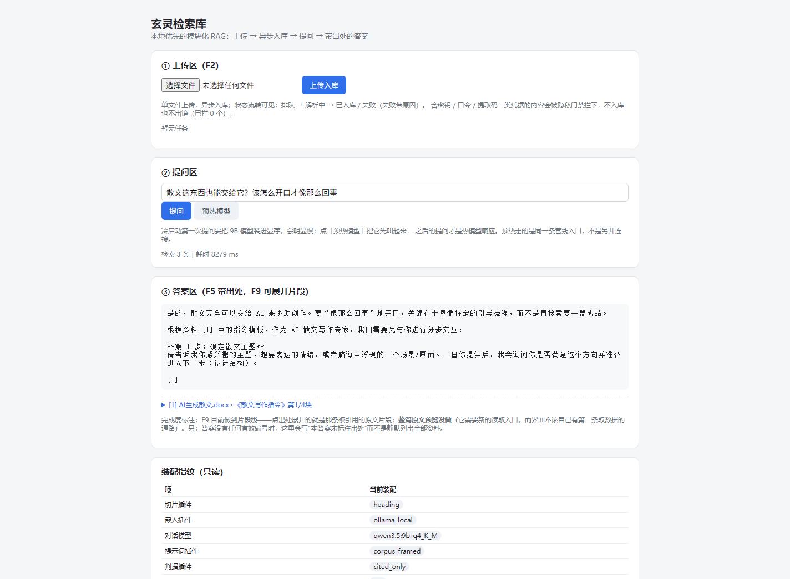

本页在构建时按发布门禁隐藏了 0 处未批准的 L2 字面（题面／语料文件名／原文片段）与 3 处本机绝对路径，替换成可见标记而不是删除内容。仓库里的原文一字未改。
玄灵检索库 · 本地优先的模块化中文 RAG 知识库
一周独立完成的检索增强生成项目：7 个可替换插件契约（§3 逐个列名）＋ 一个 706 行、六个文件的主程序 ＋ 一套 27 题、带口径版本、可复现的评测。 它现在会拒答，而且拒得可测量。
这份 README 的写法是刻意的：所有百分比后面都跟着分母、口径版本号与能不能复现；失败行不删；被证据否决的岔路单列一节。 措辞红线（PRD §3/§4.5 写死）：不写"企业级""高并发""准确率 X%"这类没有口径支撑的话。
1. 30 秒看到的东西
 | 上传区（异步入库＋状态流转）／提问区（预热＋耗时）／答案区（出处可展开原文片段）。<br>装配指纹只读展示，没有任何切换控件——理由见 §3。<br>*这张图是真渲染，也不是随手截的：2026-11-05 用本机 Chrome headless 打开 http://127.0.0.1:8125，提交已批准的题 1、等答案与出处落地后拍摄，窗口 1440×1140 是特意裁的——页面底部那行"已入库文件"清单不在画面里。画面内的文本用几何式审计过一遍（视野内 721 字、未批准字面 0 处；拿空白名单做对照能同时报出题面与文件名）。出处保持折叠：展开就会把未批准的 gold_span 送进像素，而批准单位是字段。这一版是重拍的：上一张截图拍在"出处列表按列表位置重编号"的年代，那个缺陷已按 R2e 修掉（docs/decisions 结论 36 与 Q32），旧图两版全部标为「已废弃、未公开」，裁定记在 pub/media_dispositions.json。诚实说一句：这张新图本身看不出修复前后的差别——已批准的那几道题在 v8 里都只点了 [1]，名次与位置恰好相同；能看出差别的那一屏（[4] [5] [2] [3]）用的是未批准的题面，不能进产物。* |
core/ 706 行，六个文件，四件事（0 个第三方解析库、0 处按扩展名分支）
plugins/ parsers · chunkers · embedders · llms · stores · prompts · policies ＋ rerankers（空，接口位）
共 18 个插件实现文件，其中 2 个是"有意不实现"的占位（xlsx、扫描件 OCR）
eval/ run.py（尺子）· adjudicate.py（人工仲裁）· index_guard.py（索引守卫）· duplicate_scan.py · privacy_scan.py
app/ cli.py（F1 批量导入／命令行问答）· ui.py + server.py + privacy.py（界面壳）
docs/ PRD · decisions（35 条取舍）· experiments（38 节跑分史）· model-selection · eval-baseline-d3
data/ raw/ 真实语料（不入库）· manifests/ 台账 · vector_store/ chroma · quarantine/ 隔离区（含原因）不想先读代码、想直接上手 → §10「5 分钟自己试用」，配一张 docs/try-it-checklist.md 打勾表。
2. 从零复现（每条命令都在本机真跑过）
# 0) 环境：Python 3.12.11（uv 管理，venv 里没有 pip）
$env:PYTHONUTF8=1 # 必带：Windows 默认 GBK，中文输出与 HTML 会乱码
uv venv .venv --python 3.12.11
uv pip install --python ./.venv/Scripts/python.exe -r requirements.txt # 146 条钉死版本
./.venv/Scripts/python.exe selfcheck.py # 逐项探测环境（读配置，不硬编码型号）
# 1) 装模型（**必须写全 tag**，理由见下面的前置条件）
ollama pull qwen3-embedding:0.6b
ollama pull qwen3.5:9b-q4_K_M
# 2) 首次入库（F1）：扫 〔本机绝对路径，发布产物里不保留〕，注册表选解析器，按内容指纹幂等
./.venv/Scripts/python.exe -m app.cli import --raw data/raw
# 3) 记录索引指纹（基线）：跑分与界面入库出数前都要校验它
./.venv/Scripts/python.exe -m eval.index_guard --write
# 4) 跑分。retrieve 只量检索（约 18s，不叫模型）；full 走完整管线（约 116s，27 题）
./.venv/Scripts/python.exe -m eval.run --stage retrieve
./.venv/Scripts/python.exe -m eval.run --stage full
# 5) 起界面
./.venv/Scripts/python.exe -m app.server --port 8125 # http://127.0.0.1:8125
# 6) 测试（全程离线：假插件 + 假嵌入，不叫模型、不联网）
./.venv/Scripts/python.exe -m pytest -q # 条数随门禁增加而变，以实跑输出为准（不在这里钉数字）前置条件（这些不在 requirements.txt 覆盖范围内）
| 依赖 | 确切版本/位置（本机实测） | 为什么必须写死 |
|---|---|---|
| Python | 3.12.11（uv 管理的 venv，venv 内没有 pip） | 安装命令一律 uv pip install --python ./.venv/Scripts/python.exe ... |
| Ollama | 0.40.13，模型目录 data/models（不占 C 盘） | 嵌入与对话都靠它；keep_alive=10m |
| 嵌入模型 | qwen3-embedding:0.6b（639 MB，维度 1024） | ⚠ 坑（实测记在 docs/model-selection.md）：ollama pull qwen3-embedding 不写 tag 会静默装上 latest＝4.7GB 的 8b，比预期大 7 倍、慢得多，而 dim=1024 是配置与索引的契约——换 tag 等于换维度，索引必须重建 |
| 对话模型 | qwen3.5:9b-q4_K_M（6.10 GiB） | 16G 显存实测能跑的档；think=false 是实测逼出来的（思考模式一句 30 字烧 8071 token） |
| LibreOffice | 装在 〔本机绝对路径，发布产物里不保留〕\LibreOffice，不在 PATH（selfcheck 会 WARN） | docling 只认 PATH 或 DOCLING_LIBREOFFICE_CMD；没有它时 .docx 正文照抽，但会打印 no DOCX to PDF converters 并跳过 DrawingML/版式相关导出——这是一条静默降级，别当成"转换成功" |
| GPU | RTX 4060 Ti 16GB（CPU 也能跑，只是慢） | 型号写在配置里，换型号不动代码 |
关于 requirements.txt：它是 uv pip freeze 从当前环境原样导出的（146 条钉死版本，不手写）。 早期选型留下的三个"说不清为什么在里面"的包已经结清，判据是读已装发行版自己的 METADATA 看谁硬要它，不是凭印象：
| 包 | 处置 | 实测依据 |
|---|---|---|
fastapi | 已卸载 | 本仓代码 0 处 import（界面用标准库 http.server）；提到它的只有 chromadb 的 extra == 'dev'、transformers/huggingface_hub 的 serving/testing extra——不装 extra 就永远不需要它 |
starlette | 已卸载（随 fastapi） | 非 extra 的依赖方只有 fastapi 本身，fastapi 一走它就是孤儿 |
uvicorn | 保留，但不算我们的选型 | chromadb-1.5.9.dist-info/METADATA 里 Requires-Dist: uvicorn[standard]>=0.18.3 没有 extra 标记＝硬传递依赖，删不掉：从清单里抹掉它，下次 pip install chromadb 仍会按 >=0.18.3 解析出一个我们没钉过的版本；把它留在清单里钉死 0.54.0 才是可复现，把它写成"我们选了 uvicorn"就是不诚实 |
jieba | 早已卸载（结论 24） | 无代码引用的悬空依赖 |
selfcheck.py 里这四个名字进同一张监视表（DANGLING_PACKAGES）：清单里再出现 jieba/fastapi/starlette 直接判 FAIL； uvicorn 已从 REQUIRED_PACKAGES 移出——传递依赖不该冒充成项目自己的必需包。 卸掉 fastapi+starlette 后重跑全量测试：290 passed, 1 skipped，与卸之前逐项相同。
这份清单是真空跑验证过的（S0 结掉残留后重验一遍，2026-11-03）：新建一个干净 venv → uv pip install -r requirements.txt（146 条）→ 用那个 venv 的 python 直接跑全量测试， 结果 290 passed, 1 skipped（那 1 条跳过是缺 eval/queries.jsonl 时的形状检查，题集不入库）。 干净环境里同样不存在 fastapi/starlette/jieba 这三个名字，uvicorn 则由 chromadb 自动带入并钉在 0.54.0—— 所以没有"只有这台机器装了、别人装不出来"的隐性依赖。临时 venv 用完已删。 所以「一条命令装好依赖」这句话是可以照着做的，不是祝愿。 重跑这条验证：uv venv tmp/verify_venv --python 3.12.11 && uv pip install --python tmp/verify_venv/Scripts/python.exe -r requirements.txt && PYTHONUTF8=1 tmp/verify_venv/Scripts/python.exe -m pytest -q。
冻结的 27 题题集在 eval/queries.jsonl（不入库，含语料原句）；它的 sha256 钉在 eval/run.py， 形状或内容漂移一律拒绝跑分。指标明细落 eval/results/（聚合数入库，含原话的明细在 data/，不入库）。
3. 架构：主程序只有四件事
core/ 六个文件里 pipeline.py 只负责：① 按注册表拿解析器→切片→嵌入→入库；② 用台账做幂等（同内容不重复消耗嵌入）； ③ 把"检索→组装上下文→作答"的顺序固定下来；④ 出处只能来自检索命中，不认模型自述的编号。 它不知道文件格式、不知道模型型号、不知道向量库是谁。
七个契约（core/contracts.py，@runtime_checkable Protocol）：
| 契约 | 实现插件 | 说明 |
|---|---|---|
DocumentParser | md txt docx pdf xlsx(占位) ocr(占位) | 一个后缀集合 + 一个 parse() |
Chunker | fixed_size heading scaffold_strip | heading 是出厂默认；标题并入那条没做（§7） |
Embedder | ollama_local（+云端预留） | 维度与型号只从配置读 |
ChatModel | ollama_local ollama_cloud | think=false＋固定采样是实测逼出来的（docs/model-selection.md） |
VectorStore | chroma_local（pgvector_cloud 预留） | 文件型，零运维 |
PromptTemplate | legacy_v1 corpus_framed refusal_prefixed(_v2) | 契约演进加的（PRD 禁令 3 的一次受控例外） |
AnswerPolicy | legacy_v1 cited_only | 同上；出厂 cited_only |
注册表三方向对照（core/registry.py）：
| 怎么做 | 结论 | |
|---|---|---|
| 本项目 | 每个插件自带 register(registry)，assembly.py 扫 plugins/*/*.py，取用时按后缀查表 | 加能力＝一个文件 + 一行配置 |
LlamaIndex ID2FILE_DEFAULT_READERS | 同样是"扩展名→Reader"注册表 | 直接参照物 |
Dify extract_processor.py | 按扩展名 if/elif 分派 | 反面教材：加一种格式要改主流程 |
"只加文件、core/ 零改动"的真实提交（每条都用 git show --name-only <c> -- core/ 验证为空）： 71b2f7a md/txt 解析器 · 3eeb338 docx/pdf + xlsx/ocr 占位 · a3072d8 标题结构切片策略 · cd92b24 脚手架句剔除 chunker · 27a0b7c/fcf8e9c 提示词插件 · 025af4d 索引守卫（新增文件，主程序 0 改动）。
架构禁令同时钉在被保护物上（不是只钉嫌疑人）：eval/index_guard.py 记录基线索引指纹 （集合名＋条数＋rel_path/seq/locator 校验和，不含正文），跑分与界面入库两个入口在动手前校验， 不符就打印期望值与实际值并硬失败。它存在的理由是一次真实事故：界面上传覆写了 216 条片段的 rel_path——指标一列都没变，但那正是并列确定性的排序键（docs/experiments.md 第 37 节）。
4. 检索质量：v2 → v8 全表（失败行照登）
27 题＝22 正样本 + 5 负样本，一次跑完；同一份语料快照、同一个索引。尺子换过五次（R2b／R2b2／R2c2／R2d／R2e），跨口径不许直接算差值。每张表里的百分比都不是"准确率"， 它们是下面这些有分母的东西：
| 行 | 唯一变量 | Recall@5 | 放行含gold率 | 实质作答率 | 过度拒答率 | 负样本正确拒答率 | 口径 |
|---|---|---|---|---|---|---|---|
baseline-current-v2 | 立尺子（20→22 正、正负合批、指标补全） | 0.500（11/22） | 0.636（14/22） | 0.500（11/22） | 0.364（4/11） | 1.000（5/5） | 旧（无契约前缀要求） |
baseline-current-v3 | 只固定采样 temp=0＋seed | 0.500 | 0.636 | 0.455（10/22） | 0.364（4/11） | 1.000（5/5） | 旧 |
P-run-1 / P-run-2 | corpus_framed+cited_only 两处分量不动，判失败 | 0.500 | 0.636 | 0.636（14/22）/ 0.545（12/22） | 0.091（1/11）/ 0.182（2/11） | 0.800（4/5）/ 1.000（5/5） | 旧；temp=0.2 噪声 ±1~2 题 |
P1-cited-only | 只动呈现层出处筛选 | 0.500 | 0.591（13/22） | 0.455（10/22） | 0.364（4/11） | 1.000（5/5） | 旧 |
baseline-current-v4 | A0：cited_only 转正式默认 | 0.500 | 0.636 | 0.455 | 0.364 | 1.000（5/5） | 旧 |
| 行 A（scaffold_strip） | 删跨文件逐字重复句＋重建索引 | 0.545（12/22） | 0.591（13/22） | 0.545（12/22） | 0.364（4/11） | 1.000（5/5） | 旧；净收益只有 1 题，不转正 |
baseline-current-v5 | 尺子 R2b：合格拒答＝查固定前缀 | 0.500 | 0.636 | 0.455 | 0.364 | 0.000（0/5） | R2b（口径第一次） |
baseline-current-v6 | 尺子 R2b2：拆类 A／类 B，离线重算 | 0.500 | 0.636 | 0.455 | 0.364 | 0.400（2/5）｜前缀合规率 0/3 | R2b2（第二次） |
baseline-current-v7 | 尺子 R2c2：分母固定＋新增误用率列 | 0.500 | 0.636 | 0.455 | 0.364｜误用率 0/22 | 0.400（2/5）｜前缀合规率 0/3 | R2c2（第三次） |
| 行 Pref | 提示词加"必须打前缀" | 0.500 未动 | 0.636 未动 | 0.000（0/22） | 1.000（11/11） | 0.600（3/5）｜前缀合规率 1/1＝分母塌缩，不是成绩 | 判失败 |
| 行 Pref2 | 顺序反转＋可自判触发条件 | 0.500 未动 | 0.636 未动 | 0.182（4/22） | 0.636（7/11）｜误用率 0.773（17/22） | 0.600（3/5）｜前缀合规率 0.333（1/3） | 判失败（误用率没压住） |
| 行 P2 | 出厂提示词换 corpus_framed | 0.500 未动 | 0.636 未动 | 0.591（13/22） | 0.091（1/11） | 自动初判 answered=1 → 人工终判 0｜前缀合规率 0/3 | 判失败→经 R2d 重算通过（修订动机与前科见结论 32/33） |
baseline-current-v8（当前左列） | A0′：corpus_framed 转正＋重跑基线 | 0.500（11/22） | 0.636（14/22） | 0.591（13/22） | 0.091（1/11）｜误用率 0/22 | 2/5 初判／3/5 人工终判｜前缀合规率 0/3 | R2d（第四次判定口径）＋R2e（第五次：只加 引用可对应率 一列，v8 该行 0.563，界面按名次标注后重算为 1.000，见第 39 节） |
分母约定：这张表里凡只写小数、没跟着分母的格，按本列第一行的分母读—— Recall@5／放行含gold率／实质作答率 分母 22（正样本数），过度拒答率 分母 11（gold 已被放行的正样本数，定义在 PRD §3）， 负样本列分母 5。跨口径的两行之间不许直接相减，看下面这条时间线。
口径时间线（同一根尺子被换过五次，跨口径不许直接算差值）： R2b（v5 起：认固定前缀）→ R2b2（v6 起：拆类 A／类 B，前缀合规率 分母只数类 B）→ R2c2（v7 起：分母固定为类 B 题数 ＋ 新增 契约句误用率）→ R2d（v8 起：负样本门禁读人工终判，报表并列 自动初判／人工终判／不一致数）→ R2e（2026-11-04 起：新增 引用可对应率，量的是"正文点的名次"与"屏幕标签那一行"是否同一条片段—— 只加列、不改任何既有判定，也没有重跑，全部读数由 tools/citation_alignment.py 从存量明细离线重算，逐行值见第 39 节）。 完整逐行记录与每一次修订的证据在 docs/experiments.md。
随机基线对照：索引 216 个片段、每题取 top5，闭眼瞎猜命中 gold 的概率是 5/216 ≈ 0.023； baseline-current-v8 的 Recall@5 0.500（11/22）是它的约 21.7 倍（0.500 ÷ 0.023，同一套 27 题、v8 口径）—— 但 22 道正样本里仍有 11 道题的前 5 名没有 gold，"可用"谈不上，这一点也不藏。
5. 四层失效模型（这一节是事故报告，不是功能清单）
同一份跑分上，"答得不好"其实有四个独立的原因层，每层由一个不同的指标列暴露，修错层等于白干：
| 层 | 症状 | 是哪一列暴露它 | 代码在哪 |
|---|---|---|---|
| ① 排名层 | gold 被别家文档的同构模板片段压在下面（10/22 题跌出前 10） | Recall@5、gold_rank 直方图 | 切片与嵌入输入：plugins/chunkers/（heading 是出厂）；scaffold_strip 实测只值 1 题，不转正 |
| ② 判据层 | 绝对阈值两头错：0.407 的真答案被拒、0.506 的无关内容放行 | 管线层假阴性、检索层假阳性 | core/pipeline.py._retrieve 的 min_score（已证伪单条绝对线，改双条件判据排在行 E） |
| ③ 可答性层 | gold 已进上下文，模型仍答"资料中没有"（第四层失效，检索指标完全看不见） | 过度拒答率、实质作答率 | plugins/prompts/（出厂 corpus_framed：告诉模型语料长什么样＋哪段管这件事，4/11 → 1/11） |
| ④ 呈现层 | 答案拒对了，出处列表却列着一堆无关文件 | 模型真引用gold率、污染率·展示口径 | plugins/policies/cited_only.py（只保留被实际引用的编号）；新缺陷登记在 §7（Q29） |
三条从事故里长出来的纪律，都写进了 PRD 第 3 节并有测试守着：
- 指标按层归属，一列只属于一层：换呈现插件时检索列必须一动不动（起因：
放行含gold率一度算在展示列表上，跟着呈现层抖，是假归因）。 - 指标 0 抖动 ≠ 同分并列次序 0 抖动：逐字相同的两个片段跨进程换序（
rel_path相同文本、向量逐位相同），
修法是向 chroma 多要候选再按内容排序（plugins/stores/chroma_local.py），并配"把排序打透传就必须红"的对照。
- 评测集只能被跑，不能被调：单行只跑一次；反复调措辞只能用集外靶测。用 gold_span 反推触发条件＝把尺子折进被测物。
还有一条是给指标本身的：前缀合规率 曾经把破防题排除在分母外，于是"模型越硬答分越高" （行 Pref 实测 1/1＝100%）。判别法写进 PRD §4.5：把被测行为改坏，这个数会不会变差？不会变差就是无效检查。
6. 被证据否决的选项（不写代码就省下的岔路）
| 被否决的选项 | 否决它的那个数字 |
|---|---|
| 绝对相似度阈值当放行判据 | gold 0.407 被拒、无关 0.506 放行——分数区间重叠，一条线必然两头错 |
| 混合召回（BM25＋向量＋RRF） | 离线预演：11 道未命中题里字面路只够得着 1 道，默认参数下 Recall@5 11/22 → 10/22，是回归。根因：出题纪律让口语提问与模板语料几乎不共享词面 |
| 契约内模板降权（重排） | λ＝0.10／0.15／0.20／0.30 四档：Recall@5 11/22→10/22→9/22→8/22，救回恒为 0/22。重排只能"少排错"，不能"多找回" |
| 侧信道（嵌入插件把查询文本按向量作键递给 store） | 为 1 题天花板引入插件间隐藏耦合，破坏"插件只通过契约相见" |
| 跨文档模板剔除当检索优化手段（行 A） | 净收益 ＋1 题（Recall@5 11/22→12/22），但 放行含gold率 14/22→13/22、管线层假阴性 1/22→2/22，且被删句里 3 条是真内容 → 重新定位为内容卫生手段，不转正 |
| 自动补前缀（系统在输出外面拼那句契约话） | 会让 前缀合规率 变成构造性恒 100%——与恒 0 的"无有效引用率"同族假绿。要修就修行为，且分两列报（自发率／规范化后合规率） |
| 反向激励指标（分母随被测行为伸缩） | 行 Pref 实测：破防题退出分母 → 同一批输出从 0/3 报成 1/1＝100%。R2c2 修成固定分母 |
7. 没做什么，以及为什么（都是明确排后的取舍，不是失败）
| 没做 | 原因 |
|---|---|
| xlsx 解析、扫描件 OCR | 有意只留接口位：plugins/parsers/xlsx_parser.py、ocr_parser.py 正常登记后缀、parse() 抛 CapabilityNotImplemented，界面显示"第一版有意不实现，原因见 PRD 1.2"。多 sheet/合并单元格转文本后检索质量差；OCR 会把噪声直接灌进检索输入 |
| F9 整篇原文预览 | 界面只做到片段级（点出处展开被引用的那段原文）。整篇预览需要第二条取数通路，而"界面只许走管线"是本项目的硬约束（有 spy 测试钉住） |
| 行 M（换嵌入模型）、行 E（放行判据双条件） | 时间裁定（PRD §9 第 7 天）：实验线收口在 R2d ＋ B 的离线位移预演。M 会作废现行阈值、E 要重新标定，两者都不是半天能收口的活 |
无有效引用率 2/21（题 14 给了长答案却零有效编号、题 5 输出畸形编号「[无]」） | 呈现层新缺陷，登记在 docs/decisions Q29 排给 policies 线。本轮不动它，也不记进行 P2 的成绩 |
| AnythingLLM 同题对照表 | 只装了它当"活教材"照抄目录组织方式（结论 13），同题集对比没跑。要跑需先解决它的切片策略与本语料的对应关系 |
| 并发、缓存、连接池 | 单用户本地工具，加这些只会让"哪些改动值得"失去可测的对照组。真正需要的是幂等（台账 core/manifest.py：同内容不重复消耗嵌入） |
| 云端形态与口令 | 核实之后的主动不做，不是没来得及。 官方文档写明：默认域名会展示"访问提示中间页"，访客必须点击「确定访问」才能进入业务页；而移除它的唯一合规途径是绑定已完成 ICP 备案的自定义域名（原句与 URL 见 docs/cloud-deployment-findings.md F1／F2）。对一个真实读者只有 5 分钟的作品集，把第一屏让给一道要人确认的风险提示不划算，而备案是周级外部流程、不在一周预算内。已具备的是契约位（core/contracts.py 的 ChatModel 与 VectorStore）与那份文档里三条挂着原句的可行路径（含"函数内置 0.88 MB 索引现算余弦"）；同一份文档也列了 6 项未核实，包括免费环境的超时档位与内置嵌入模型有无。口令设计上走环境变量、不入库 |
| 泛问题与切片粒度错配（"省市小作文怎么写"召不到具体篇目） | 记为已知限制不修：这是提问意图与内容粒度不匹配，要修得改语料组织方式，代价与收益不成比例 |
角色泄漏：答案以资料里规定的角色自称，而不是陈述资料（Q31，界面实测原话 你好！我是你的文案创作助手。……） | v8 转正 corpus_framed 的副作用：system 要求"按该段资料规定的步骤与要求回答"，而语料本身就是一份份规定身份的指令模板——越听话越像角色扮演。两条修法都不能要：改提示词＝重跑基线、v8 的左列身份作废；在呈现层把答案改写成陈述式＝伪造用户看到的东西。实质作答率 看不见它（有内容就算分）、前缀合规率 与 R2d 人工终判也不管"说话的是谁"，所以它拿的是好消息的分数。登记不修，理由与处置写在 docs/decisions Q31 |
正文编号与出处列表编号是两套（Q32；用户第一手看到正文出现 [6] 而 top_k=5、列表只有 1–4） | 界面侧那半本轮已修：app/ui.py 不再按列表位置重编号，标签就是检索名次，允许不连续——重跑那一屏得到 [4] [5] [2] [3]，与正文一致（测试先行四条在 tests/test_ui_shell.py，截图也按 R2e 重拍）。仍未修的是越界编号：模型自己点 [9]、[10] 而命中只有 5 条时，标签改法救不了它（属 Q29 家族）。为了让这类错误以后能被量到，本轮新增观察列 引用可对应率（尺子第五次变更 R2e，tools/citation_alignment.py 离线重算，v8 那行从 0.563 到 1.000，逐行值见第 39 节） |
"有命中却答没有"时，界面不说"检索到 N 条但都不相关"（Q33，界面实测：答案区 资料中没有 [3]、状态行 检索 5 条） | 那句"管线判为无可用资料"只在检索归零时挂上，于是用户看到一句带编号的"没有"，看不到 N 条命中其实不覆盖问题。写"都不相关"是相似度分数撑不起的断言（结论 29/31 已经两次证明这类万能话会变质），诚实版要说"检索到 N 条、判为不足以回答"，那就得给 Answer 契约加状态字段＝动主程序契约面，按 PRD 第 4 节得先预注册。本轮预算不在契约演进（docs/decisions Q33） |
| 登录/账号体系 | 本地形态不设登录（结论 10）；公网访问才加一个最简口令 |
8. 隐私与可复现声明
- 语料与含原句的评测明细一律不入库：
data/整体 gitignore，eval/queries*.jsonl不入库（README 只放聚合数字）。 - 敏感文件不入库、不进列表、不进出处：
eval/privacy_scan.py按形态检测（产品密钥、网盘提取码、口令、私钥块、身份证号），
命中禁止级的文件留在 〔本机绝对路径，发布产物里不保留〕（里面附一份逐条原因说明；那个文件名不抄在这里——产物侧门禁 G16 只放行获准的名字与工程自己的文件名）。界面复用同一套规则（一份不复制）， 错误信息与访问日志就地打码；白名单来自扫描结果，代码里没有文件名清单。
- 上面那张截图是按字段批准后才发布的：画面里的文本用几何式审计取一遍（只收当前视口内真正可见的元素，
折叠的原文块不算、输入框里的题面要算），实测视野内 721 字、未批准字面 0 处； 拿空白名单做同一套比对时能同时报出题面与文件名，所以这个审计器双向都可信。 出处行保持折叠——展开就会把未批准的 gold_span 送进像素，而批准单位是字段不是题目（冲突记录在 pub/approvals.json）。 录屏画面另有更严的一套：四类检查 0 命中、阳性对照 6/6，记在 docs/demo-checklist.md； 隔离区那批文件的名字从头到尾不进任何对外文档，连数量都只写实测的 6 份。
- 站点与仓库是两份发布物，检查也是两套：
python -m pub.build管dist/干不干净，
python -m pub.publish_check 管"把这批提交整个推上公网会不会漏东西"（G10 被跟踪文件、G11 媒体版本收口）。 构建那边覆盖哪几号门禁，由 pub/gates.py 里 run_all 的接线决定，README 不重述号段—— 以前抄过一次就直接腐烂了（加到 G16 时没人回来改这行），现在由 pub.final_checklist 从接线推出来印在清单第一节。 dist 全绿不等于仓库可以公开。具体差多少处一律不写在这里——写死一个数就会过期， 本轮已经为此错过三次；当前阻塞集由 python -m pub.final_checklist 生成到 docs/publication-final-checklist.md，历史命中与处置方案在 docs/publication-history-audit.md （那份报告只写路径／类型／字段名＋字面哈希，写原文会让构建失败，这条是 G12）。
- 指标可复现：对话模型固定
temperature=0.0＋seed=20261102（Ollama 0.40.13 实测认 seed，
同 seed 在 temp=1.2 下都能产出逐字节相同的输出）；跑分产物记录采样指纹； 索引指纹由 eval/index_guard.py 记录并在出数前校验，不符直接拒绝。
- 唯一"不可复现"的部分我不遮着：v2/P-run 两代跑分是在
temperature=0.2下单次抽样得到的，
表里逐行标注了"旧口径"，跨口径不算差值。
9. 简历话术三条 ＋ 最可能的追问
- 一周独立完成本地优先的模块化 RAG：706 行主程序 ＋ 7 个可替换契约（5 个第一版就有，2 个是证据逼出来的演进），加一种文件格式只需新增一个插件文件
＋ 一行配置（71b2f7a／3eeb338 等 6 条"主程序零改动"提交为证）。
- 自己建了评测尺子并用它定位出四层独立失效（排名／判据／可答性／呈现），每层绑定可检验指标；
27 题集 sha256 冻结、采样固定可复现，把"过度拒答率"从 4/11 降到 1/11（v7→v8；这一列分母与定义都没动， R2d 改的是负样本那三列）。
- 用数据否决了自己的初始设计：绝对相似度阈值、混合召回、契约内重排、自动补前缀四个方案被实测数据判死，
结论登记在 docs/PRD §4.5；三次修复"合格拒答"判据后，最终把语义判断交回人工仲裁并留下不一致数列。
追问准备（完整 8 问与答在 docs/interview-notes.md，这里只留最可能被当场问到的四条）：
- *"为什么不做并发和缓存？"* → 单用户本地工具，加它们不会多回答一个问题，却会让"哪些改动值得"失去可测对照；
我真正需要的是幂等，所以做了内容指纹台账。
- *"为什么不顺手把 xlsx 也做了？"* → 多 sheet/合并单元格转文本会直接污染检索输入，代价是降低别人以为会提高的东西；
我把它做成占位插件，接口在、能力诚实缺席。
- *"你的 Recall 0.5 是不是太低？"* → 是，且这就是留着失败行的原因：随机基线是 5/216 ≈ 0.023，我拿到约 21.7 倍但没到可用；
而"没被向量召回的片段降权再狠也进不了候选集"这条已经用数据证明，剩下的路是重做嵌入输入或换嵌入（M），那需要整段预算。
- *"改判据会不会是把分数改好看？"* → 判据修订与实验行永远分开提交，历史旧读数不覆盖、新读数另起一行，
每条判据都配"能让它失败的阳性对照"；我还记了一次真实事故：界面把基线索引元数据写坏了， 指标一列都没变，但那正是并列确定性的排序键（docs/experiments.md 第 37 节），修完之后把守卫钉在了被保护物上。
10. 5 分钟自己试用（照这张表走就行）
$env:PYTHONUTF8=1
./.venv/Scripts/python.exe -m app.server --port 8125 # http://127.0.0.1:8125打开页面后照着 docs/try-it-checklist.md 一行行走，每一栏都留了「我的第一反应」等你当场写（下表每一行都是我本机实测过的）：
| 做什麼 | 你会看到（这些是我本机实测的屏幕原话） |
|---|---|
| 点「预热模型」 | 状态行 预热完成，357 ms |
| 问 5 个你自己的问题 | 状态行 检索 N 条｜耗时 X ms，答案区下面每条出处都可展开原文片段 |
| 问一个库里肯定没有的问题 | 答案区 资料中没有相关内容，无法回答。，状态行 检索 0 条｜耗时 316 ms｜管线判为无可用资料，出处区 本答案没有出处列表 |
| 问一个"检索命中了、但资料其实不管这件事"的问题 | 状态行 检索 1 条｜耗时 852 ms（没有那句「管线判为无可用资料」），答案区是 资料中没有 [1]——这句话是模型自己写的，出处区还列着一条资料；§4 的前缀合规率与 §5 的无有效引用率量的就是这一格 |
| 上传一份自己的新文档 | 状态流转 解析中 → 已入库 <那份文件> 片段 1 个｜0.33s（刷新后它才进底部「已入库文件」清单） |
| 问一个只有新文档能答的问题 | 答案带引用编号，出处写 [1] <那份文件> · <文档里的小节名>，展开就是刚传上去的那段 |
传一份内容里带一行密钥赋值的文件（键名形如 api_key，值随便编造） | 失败 <那份文件> —— 内容含密钥／口令／提取码一类凭据，界面已拦下，未入库（PRD 第 6 节隐私红线） |
文件名一律写成<那份文件>：上传进沙箱的文件名会进台账、台账名单受门禁 G14 管， 抄进这份会被公开出去的文档就得先逐条批准。我实测用的那三份样例（一份 4 行的小.md、一份带密钥赋值的.txt、 以及我问的那两句问题）都只留描述，原文留在本机的data/里。
三条要说在前面的边界：
- 拒答那句是判据插件给的原文（
plugins/policies/_refusal.py里的F5_ANSWER），界面没再加工；
出厂装配是提示词 corpus_framed ＋ 判据 cited_only——页面底部那张只读的装配指纹表就是证据。 两个判失败的前缀方案（行 Pref／行 Pref2，结论 29 与 31）都没上线，所以这里不会出现"先道歉再硬答"那类措辞（§4 表）。
- 你传的东西动不到跑分。界面写的是沙箱集合
xuanling_ui，§4 那些数字量在基线集合上
（基线集合的名字钉在 .env 里，这里不抄）； 这条分界不是口头保证，docs/experiments.md 第 37 节记着它曾经被 setdefault 打穿过一次， 现在由 app/server.py 硬覆盖 ＋ tests/test_ui_shell.py::test_界面永远不许写进基线集合 守着。
- 界面里能问出好结果，不代表指标好看。§4 左列 v8 的 Recall@5 是 0.500（11/22）：22 个正样本里正好一半的
gold 片段压根进不了前 5，而"没被向量召回的片段降权再狠也进不了候选集"这条已经用数据证明（结论 18 的四层失效）。 试用时请把它当"能跑、能拒、能追出处"的样机，别当已完成的检索产品。
*文档地图：PRD（约束与否决） · 决策记录（35 条编号结论＋1 条 31b 补记） · 实验记录（38 节跑分史） · 模型选型实测 · 基线与语料体检 · 3 分钟录屏分镜 · 录屏粘贴清单（逐拍实测值） · 录屏画面核查 · 面试问答准备（8 问） · 5 分钟自己试用（打勾表） · 云端部署核实记录（5 条原句＋6 项未核实） · 公开前历史审计 · 公开前终审清单*